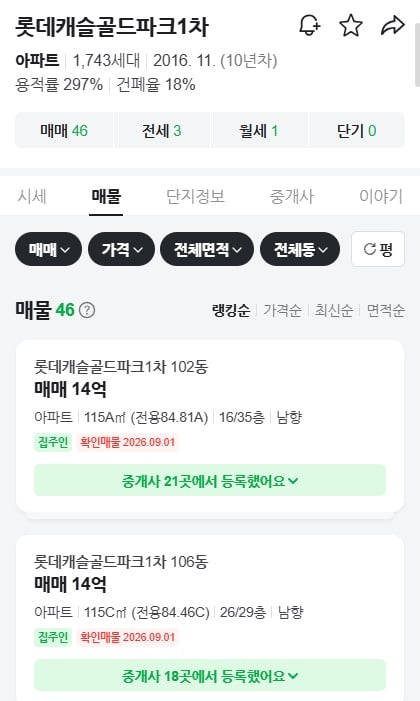
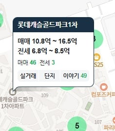

금천구도 이제 아파트가 13억~15억 되는구나
금천구를 저돈 넣고 살 이유가 있나? ㄷㄷㄷ


금천구도 이제 아파트가 13억~15억 되는구나
금천구를 저돈 넣고 살 이유가 있나? ㄷㄷㄷ
10년 후에도 그돈일꺼 같냐?
10년 후에는 금천구도 최소 25억 스타트지 뭐. 30억이라 쓰려다가 좀 보수적으로 깠다.
부천도 대장급이 이제 16억대야 뭘 놀라냐.. 금천구면 당연한거지 저기 주변도 언젠가 재개발 다 될텐데 더 비싸질거임
이부망천 ㄷㄷ
망해서 16억
은행나무사거리쪽 벽산아파트였나 거기는 아직은싸다..!
금천도 주변 환경이야 추가 개발 가능성 많이 열려있고 실제로 큰 빌라 구역 재개발 진행중인디 뭐.
금천이 확실히 꿀린다 싶은건 이제 학군이 문젠데 그거 딸린다고 서울 아파트가 10억 밑으로 갈 시기는 지났음
가격은 그냥 다 이유가 있음. 관악구도 존나비쌈
ㅋㅋㅋㅋㅋㅋㅋㅋㅋㅋㅋㅋㅋㅋㅋㅋㅋㅋ
진짜 할말이없다 시발 ㅋㅋㅋㅋㅋㅋㅋ
저렇게해도 빨아주는데 방법이있나 ㅋㅋㅋㅋㅋ
근데 너는 아까부터 서울 부동산글만 올린다
왜그래?

노원사는데 울집보다 거의 2배가까이네
브랜드아파트에다가 1호선이긴 하지만 도보5분 역세권, 게다가 초품아잖아 요즘 정부에서 강남잡돌이해서 오히려 다른지역들이 다 오르고 있는데 그영향도 있을듯
부동산은 신이야..
금천=미니차이나
이번에 이사하면서 '서울 서쪽은 절대 안간다'라는 마음으로 알아봤음
저기 근처 요즘 신안선서에 신속통합 재개발한다고해서 빌라도 오르던데
요즘 중간가격집들이 급상승중